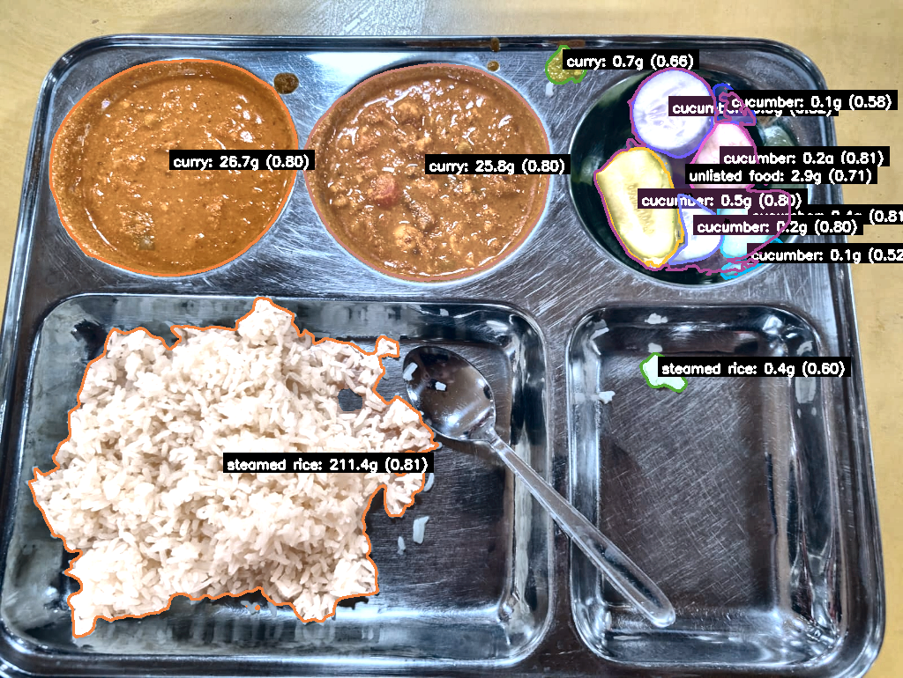

{
"resolution": "1600x1204",
"channels": 3,
"dtype": "uint8",
"expected_items": [
"steamed rice",
"dal palak",
"chapati"
],
"plate_profile": "5_compartment",
"debug": false
}
{
"food_items": [
{
"name": "steamed rice",
"volume_ml": 196.3,
"mass_g": 211.4,
"calories": 274.8,
"protein": 5.7,
"carbs": 59.2,
"fat": 0.6,
"confidence": 0.8149,
"class_label": "steamed rice",
"class_confidence": 0.7938,
"top_k": [
{
"label": "steamed rice",
"confidence": 0.7938,
"raw_similarity": 0.7938
}
],
"identification_status": "recognized",
"menu_match": true,
"matched_menu_item": "steamed rice",
"identification_confidence": 0.7938,
"segmentation_confidence": 0.7938,
"association_confidence": 1.0,
"menu_match_confidence": 1.0,
"depth_confidence": 1.0,
"scale_confidence": 0.7
},
{
"name": "steamed rice",
"volume_ml": 0.4,
"mass_g": 0.4,
"calories": 0.5,
"protein": 0.0,
"carbs": 0.1,
"fat": 0.0,
"confidence": 0.6025,
"class_label": "steamed rice",
"class_confidence": 0.4339,
"top_k": [
{
"label": "steamed rice",
"confidence": 0.4339,
"raw_similarity": 0.4339
}
],
"identification_status": "recognized",
"menu_match": true,
"matched_menu_item": "steamed rice",
"identification_confidence": 0.4339,
"segmentation_confidence": 0.4339,
"association_confidence": 1.0,
"menu_match_confidence": 1.0,
"depth_confidence": 1.0,
"scale_confidence": 0.7
},
{
"name": "cucumber",
"volume_ml": 0.4,
"mass_g": 0.3,
"calories": 0.0,
"protein": 0.0,
"carbs": 0.0,
"fat": 0.0,
"confidence": 0.8153,
"class_label": "cucumber",
"class_confidence": 0.9174,
"top_k": [
{
"label": "cucumber",
"confidence": 0.9174,
"raw_similarity": 0.9174
}
],
"identification_status": "unlisted",
"menu_match": false,
[
{
"step": "Input",
"message": "Original image saved",
"params": {
"resolution": "1600x1204"
},
"elapsed_s": 0.1818,
"input_file": null,
"output_file": "original.png",
"timestamp": "2026-11-09T17:58:41.283389"
},
{
"step": "Pipeline",
"message": "Step 1 — Preprocessing & Perspective Warp",
"params": {},
"elapsed_s": null,
"input_file": null,
"output_file": null,
"timestamp": "2026-11-09T17:58:41.283389"
},
{
"step": "Quality Gate",
"message": "PASS",
"params": {
"blur_score": 351.14,
"tilt_deg": 25.0
},
"elapsed_s": null,
"input_file": null,
"output_file": null,
"timestamp": "2026-11-09T17:58:41.392140"
},
{
"step": "Preprocessing",
"message": "Complete",
"params": {
"output_size": "1024x770"
},
"elapsed_s": 0.2801,
"input_file": null,
"output_file": null,
"timestamp": "2026-11-09T17:58:41.562934"
},
{
"step": "Pipeline",
"message": "Step 2 — Compartments & Scale",
"params": {},
"elapsed_s": null,
"input_file": null,
"output_file": null,
"timestamp": "2026-11-09T17:58:41.564045"
},
{
"step": "Scale Calibration",
"message": "Fallback to bbox-based calibration",
"params": {
"cm_per_pixel": 0.03812,
"method": "bbox"
},
"elapsed_s": null,
"input_file": null,
"output_file": null,
"timestamp": "2026-11-09T17:58:41.582111"
},
{
"step": "Compartment Detection",
"message": "Scale computed",
"params": {
"cm_per_pixel": 0.03812,
"pixel_area_cm2": 0.00145309,
"compartments": 0,
"scale_confidence": 0.7
},
"elapsed_s": 0.0183,
"input_file": null,
"output_file": null,
"timestamp": "2026-11-09T17:58:41.582111"
},
{
"step": "Pipeline",
"message": "Step 3 — Depth Estimation",
"params": {},
"elapsed_s": null,
"input_file": null,
"output_file": null,
"times| Step | Message | Params | Time |
|---|---|---|---|
| Input | Original image saved | {"resolution": "1600x1204"} | 0.1818s |
| Pipeline | Step 1 — Preprocessing & Perspective Warp | — | — |
| Quality Gate | PASS | {"blur_score": 351.14, "tilt_deg": 25.0} | — |
| Preprocessing | Complete | {"output_size": "1024x770"} | 0.2801s |
| Pipeline | Step 2 — Compartments & Scale | — | — |
| Scale Calibration | Fallback to bbox-based calibration | {"cm_per_pixel": 0.03812, "method": "bbox"} | — |
| Compartment Detection | Scale computed | {"cm_per_pixel": 0.03812, "pixel_area_cm2": 0.00145309, "compartments": 0, "scale_confidence": 0.7} | 0.0183s |
| Pipeline | Step 3 — Depth Estimation | — | — |
| Depth Estimation | Complete | — | 30.5133s |
| Pipeline | Step 4–6 — SAM 3 Food Identification & Segmentation | — | — |
| SAM3 | Identified 13 food items (2 recognized, 8 unlisted, 3 uncertain) | — | 29.2712s |
| Pipeline | Step 7 — Volume & Mass Estimation | — | — |
| Volume Estimation | Computed mass for 13 items | {"total_items": 13} | 0.0331s |
| Pipeline | ✅ Pipeline complete | {"total_food_items": 13, "avg_confidence": 0.7325, "scale_method": "bbox"} | 60.4478s |